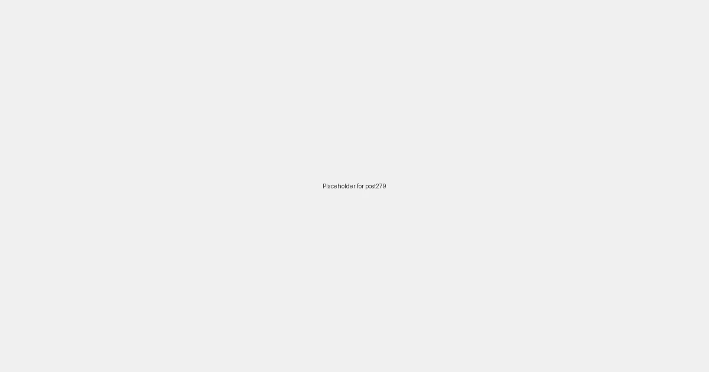

Local SEO for Electricians: Wiring Your Business for Local Search Success in 2026

For electricians, every service call is an opportunity to build trust and ensure safety. But how do potential customers find your reliable services when they have an urgent electrical need? In 2026, simply having a website or relying on referrals might not be enough. If your electrical business isn't appearing prominently in "electrician near me" or "emergency electrician [city]" searches, you're dimming your chances of connecting with local clients who need you most.
Why Local SEO is Crucial for Electricians
When electrical problems strike, people don't want to wait. They pull out their smartphones and search for immediate solutions. This is where Local Search Engine Optimization (SEO) becomes your most powerful tool. Local SEO ensures your business is visible to potential customers specifically within your service areas, at the exact moment they're searching for electrical services. In 2026, with the prevalence of voice search, mobile-first indexing, and location-based recommendations, a robust local SEO strategy isn't just an advantage—it's essential for keeping your business wired for success.
Key Components of a Winning Local SEO Strategy for Electricians:
-
Google Business Profile (GBP) Optimization: Your Digital Service Van
Your Google Business Profile is often the first point of contact for potential clients. Optimizing it is paramount:
- Accurate & Consistent NAP: Ensure your business Name, Address, and Phone number are identical across all online platforms. Inconsistent information can short-circuit your search rankings.
- Define Service Areas: Clearly specify all cities, towns, and neighborhoods where you offer electrical services. This is crucial for "near me" searches.
- Strategic Categories: Select the most relevant primary and secondary categories (e.g., "Electrician," "Electrical Contractor," "Emergency Electrician," "Commercial Electrician").
- Engaging Photos & Videos: Showcase your team, completed projects (before and after), professional equipment, and testimonials. High-quality visuals build trust.
- Customer Reviews: Actively solicit reviews from satisfied customers. Respond promptly and professionally to all feedback, demonstrating excellent service and accountability.
- Utilize GBP Posts: Use posts to highlight special offers, electrical safety tips, new services, or completed projects.
-
Local Keyword Research: Understanding Your Customers' Electrical Needs
Identify the specific terms local residents use when searching for electrical services. These are typically service-specific and location-specific:
- "emergency electrician [city/neighborhood]"
- "electrical panel upgrade [city/zip code]"
- "residential electrician [city]"
- "commercial electrical services [county]"
- "lighting installation [town]"
Integrate these keywords naturally into your website content, GBP descriptions, and online directories.
-
On-Page SEO for Electrical Services: Signaling Local Expertise
Your website needs to be structured and optimized to clearly communicate your offerings and expertise to search engines:
- Dedicated Service Pages: Create individual pages for each electrical service you offer (e.g., "Electrical Panel Upgrades," "Residential Wiring," "Commercial Electrical Maintenance," "Generator Installation").
- Location-Specific Content: Create landing pages for each major service area, mentioning local landmarks, neighborhoods, and community-specific electrical needs.
- NAP on Every Page: Embed your consistent Name, Address, Phone number on every page, ideally in the footer or header.
- Schema Markup: Implement relevant schema markup (e.g., `LocalBusiness`, `Electrician`, `Service`) to provide search engines with structured data about your business and services.
- Valuable Content: Publish blog posts and articles on common electrical issues, safety tips, smart home wiring, or the benefits of professional electrical inspections. This establishes your authority.
-
Citations and Local Directories: Building Online Mentions
Ensure your business's NAP information is consistent across numerous online directories. This builds trust and authority with search engines:
- Yelp, Angi (formerly Angie's List), HomeAdvisor
- Local Chambers of Commerce and business associations
- Industry-specific directories for electricians
- Social media profiles (Facebook, LinkedIn)
-
Local Backlink Building: Enhancing Authority
Acquire backlinks from other reputable local businesses and organizations. This signals to Google that your electrical business is a trusted part of the community:
- Collaborate with local contractors, real estate agents, or property management companies.
- Sponsor local community events or sports teams.
- Seek features in local home improvement blogs or community news outlets.
-
Mobile-First Design and Website Speed
Many urgent electrical searches happen on mobile devices. Your website must be fast-loading, responsive, and easy to navigate on smartphones to provide a seamless user experience, allowing potential clients to quickly find your services and contact you.
Powering Your Electrical Business with LocalLeads
At LocalLeads, we understand the specific digital marketing needs of electricians. Our platform is designed to rapidly generate highly optimized, location-specific landing pages that precisely target your service areas and customer demands. By leveraging our technology, you can effortlessly create hundreds of SEO-rich pages that speak directly to local residents urgently searching for electrical services.
Imagine having a dedicated webpage for "Emergency Electrician in [Downtown District]," "Electrical Panel Upgrades in [Suburb X]," or "Commercial Electrician in [Neighborhood Y]." Each page is meticulously crafted to achieve high rankings in local search, consistently delivering qualified leads without the continuous effort of manual SEO optimization.
Ready to Wire Up Your Online Success?
Don't let your expert electrical services remain in the dark. Invest in a smart local SEO strategy designed for electricians. With LocalLeads, you can automate much of this critical process, freeing you to concentrate on delivering top-notch electrical solutions.
Explore how LocalLeads can transform your online visibility and bring more clients to your business today!